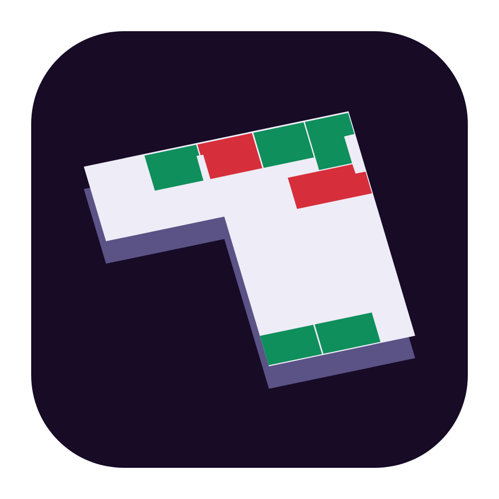

Salles Citadelle
Les salles libres du campus, étage par étage, sur les 4 prochaines heures.
Télécharger pour WindowsWindows 10 ou plus récent, fichier .exe
Télécharger pour MacProcesseurs Apple et Intel, fichier .dmg
Première ouverture
L'application n'est pas signée par un éditeur reconnu : le système affiche donc une alerte la première fois. Voici comment l'ouvrir.
Windows
- Lancez le fichier téléchargé.
- Si SmartScreen s'affiche, cliquez sur « Informations complémentaires », puis sur « Exécuter quand même ».
Mac
- Ouvrez le fichier .dmg et faites glisser l'application dans le dossier Applications.
- Ouvrez l'application, puis cliquez sur « Terminé » dans l'alerte.
- Allez dans Réglages Système > Confidentialité et sécurité, puis cliquez sur « Ouvrir quand même ».
- Si macOS indique que l'application est endommagée, lancez dans le Terminal :
xattr -cr "/Applications/Salles Citadelle.app"